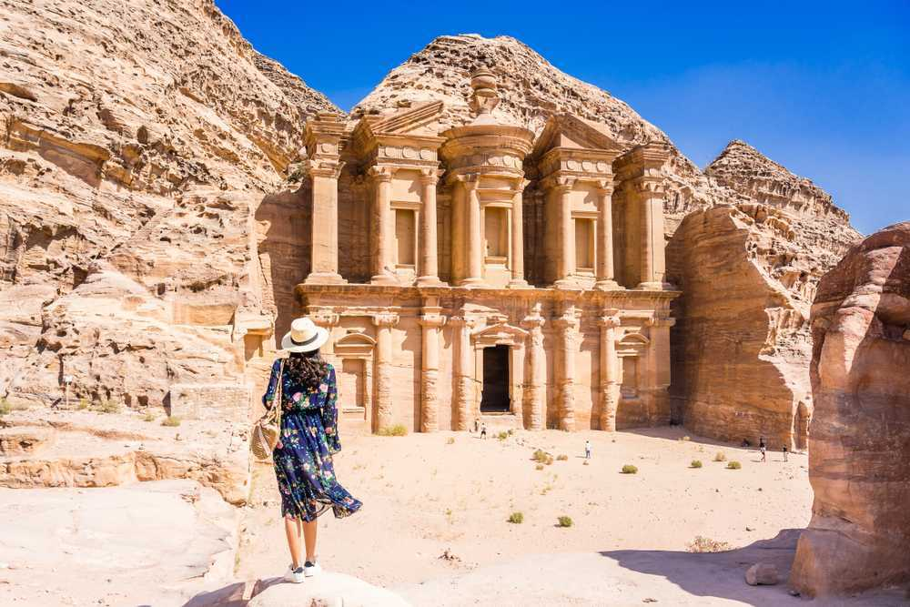
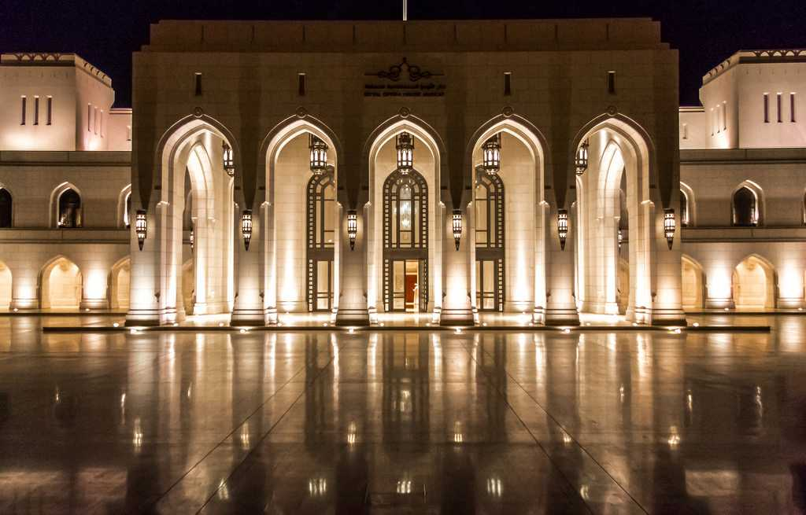
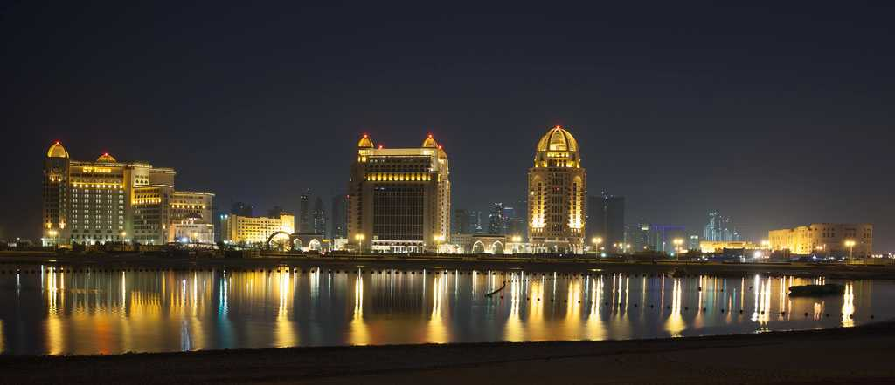
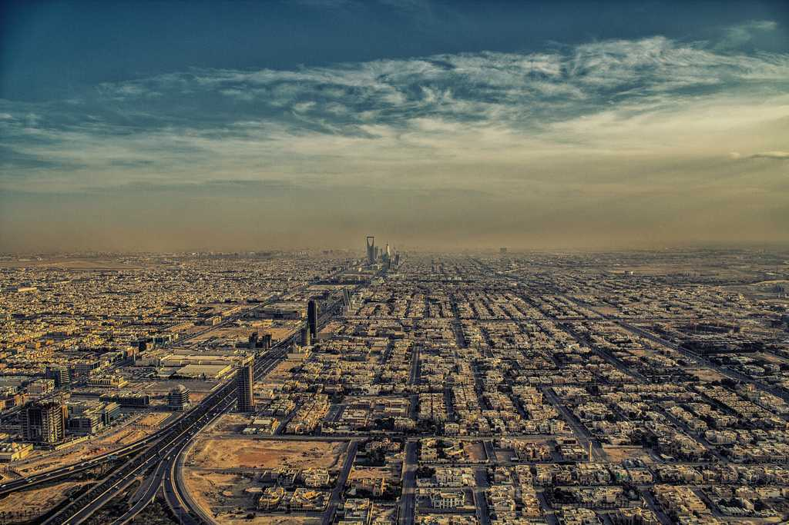

Bahrain is a small Island nation tucked away in the Persian gulf sharing its borders between Saudi Arabia and Qatar. It is known for its petroleum reserves,offshore banking and tourism. Despite being a Muslim nation,it doesn't impose strict Islamic laws like its neighbours thus , paving way for a relaxed atmosphere which draws a large number of tourists. Bahrain's biggest yearly event - Bahrain Grand PrixÊF1 race is held in the month of April each year.

Jordan
Jordan, situated in the Middle East, is renowned for Petra, a UNESCO World Heritage Site and one of the Seven Wonders of the World. Beyond the famed Petra, Jordan boasts impressive desert castles and the awe-inspiring Wadi Rum, characterized by its striking landscapes—towering cliffs and crimson sands create a mesmerizing panorama.

Oman
Oman is an Arab country located on the southeastern coast of the Arabian Peninsula. Though there is no diversity in religion here, you will find a variety of tranquil landscapes and sceneries. The beauty of the emerald beaches, the rich Arab history in the ancient forts, the lush green mountains, unique wildlife and endless deserts will give you an Arabian adventure unlike any other country in the Gulf Coast. You will find local bazaars or souks filled with handicrafts and the most famous item of Oman, Frankincense. Kind-hearted, helpful and law-abiding people add up to make this country a must-visit place.

Qatar
In just forty years, this Gulf state has grown from one of the poorest countries in the Gulf to the richest in the world. Mainly functioning on oil and natural gas revenue, Qatar is developing at breakneck speed, and everything from universities to shopping malls, 5-star hotels to football stadiums (in preparation for the 2022 World Cup) are springing up along the desert floor.

Saudi-Arabia
Saudi Arabia, officially known as the Kingdom of Saudi Arabia is an Arab country located in Western Asia and constituting most of the Arab Peninsula. Most of the citizens are Muslims, and freedom of religion is restricted by the laws of the country. Only Muslims are respected in the country but, people are very helpful and friendly towards tourists. The rich history, vast stretches of deserts, forts, mosques and temples spread throughout the country will overwhelm you. The out-of-the-box festivals and Islamic cultures, etiquettes and tradition will leave you fascinated.